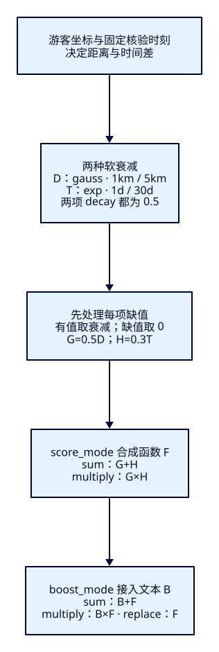
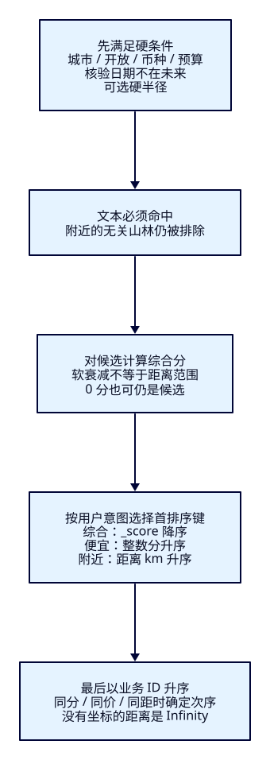

附近、新鲜、便宜，
与相关性怎样取舍？
F20限制了点评与热度的作用，却还没有表达“我现在就在这里”。游客搜西湖夜游，远处的游船与脚边的摄影展怎样排？本课让距离与资料核验时间参与综合评分，再切换价格、距离排序，看到不同意图付出的代价。
学完能用输出证明什么
- 给出距离、时间衰减的原点、宽容区与衰减尺度，解释同文案的三份游船次序。
- 用完整解释区分函数之间的合成与函数同文本的合成，核对缺值、未来日期和零分候选。
- 保持硬条件，切换综合、价格、距离三个首排序键，解释为什么高分也可以排在后面。
本课目录
图解跳转：01 · 从衰减到总分 · 02 · 候选与排序意图
1. “优先附近”与“只看附近”是两种承诺
“相关的里面尽量近”允许远码头保留机会；“只找10km内”要求远码头消失。前者是软偏好，后者是硬资格。ES可以按字段计算衰减值：越偏离给定原点，奖励越小。它修改候选分数，不替你决定哪些资料仍可游玩，也不保证每个近景点都比远景点高。
本课沿用文本must，城市、开放状态、币种、预算放filter。资料核验时间不能晚于固定快照；缺日期暂时保留。可选半径也在filter；没有半径时，远处与缺坐标者仍可命中。游客明确选“价格从低到高”时，用整数分作首排序键；默认综合模式才按_score。这里的“便宜”是预算与显式排序，没有再造一个含糊的低价加分。
2. 同一文本，不同的远近与核验时间
14份资料均为虚构，完整资料与字段契约固定。游客坐标为lat30.25/lon120.15；核验时间原点为2026-10-01T00:00:00.000Z，所有日期使用UTC。verified_at表示运营最后核验资料的时刻，不是景点年龄，也不说明今天是否开放。为了让两轮重做一致，教学不用会推进的now。
| ID（省略hz-） | 简介/距离约km | 距核验原点 | 票价元 |
|---|---|---|---|
| far | 西湖 夜游 游船 / 29.969 | 过去1天 | 20 |
| near | 同上 / 0.480 | 过去31天 | 80 |
| fresh | 同上 / 6.003 | 0天 | 60 |
| stale | 同上 / 0.480 | 过去365天 | 50 |
| missing | 同上 / 缺坐标 | 缺日期 | 30 |
| no-date | 同上 / 0 | 缺日期 | 40 |
| no-geo | 同上 / 缺坐标 | 过去1天 | 10 |
| weak | 夜游 摄影 展厅… / 0 | 过去1天 | 0 |
| extreme | 同游船文案 / 约20015 | 2000年核验 | 70 |
| noise | 山林 徒步 / 0 | 过去1天 | 0 |
| closed / expensive / sz-near / future | 同游船文案 / 0 | 前三份过去1天；future未来31天 | 0 / 120 / 10 / 0 |
默认搜“西湖 夜游”、HZ/open/CNY/0至10000分。前九份入场；noise没有任一文本词，closed停航、expensive超预算、sz-near异城、future核验时间异常，均不能靠近或新来补救。只命中“夜游”的展厅是弱相关候选，不等于完全无关的山林；这一区分会决定奖励能造成什么退步。
3. origin、offset、scale、decay 分别回答什么
origin是参照点：地理字段用游客坐标，日期字段用核验时刻原点。offset是宽容区，1km以内不因距离减奖励，时间差1d以内也给满值。scale控制离开宽容区后多远降到decay；它不是筛选半径。此处两项decay都取0.5，故距离在1+5=6km处D=0.5，时间差在1+30=31d处T=0.5。5km并不是本例的半分位置。scale必须大于0、offset不小于0、decay严格介于0与1。
地理选gauss，使超远值更快接近0；时间选exp，便于读成每再远离30d奖励减半。针对本课参数，D=0.5的[max(0,d−1)/5]平方次幂，T=0.5的max(0,a−1)/30次幂；d单位km，a是日期与原点的绝对差天数。比如11km的D=0.0625；61d的T=0.25。这是奖励曲线的不同形状，不是算法替我们判断近的价值。另有linear，本文没有据此比较效果。

4. f21-c01：先跑单项，再看组合
使用独立ES9.4.0/Lucene10.4.0单节点19221、tut-f21-attractions，一主零副本、strict、refresh=-1，无插件。简介是whitespace/lowercase、显式BM25；空格已给定中文整词，不评名称，也不将本课分数与F19或F20横比。geopoint和date能参与衰减，keyword日期字符串不行。
cd projects/travel-search
export ES_URL=http://127.0.0.1:19221
export APP_URL=http://127.0.0.1:18081
docker compose -f infra/f21/compose.yaml up -d es
bash infra/f21/wait.sh
# 已有本课索引先用cleanup点名清理，再从01重做
bash labs/f21/01-decay.sh{
"settings": {
"number_of_shards": 1,
"number_of_replicas": 0,
"refresh_interval": "-1",
"analysis": {
"analyzer": {
"lesson_words": {
"type": "custom",
"tokenizer": "whitespace",
"filter": [
"lowercase"
]
}
}
},
"similarity": {
"lesson_bm25": {
"type": "BM25",
"k1": 1.2,
"b": 0.75,
"discount_overlaps": true
}
}
},
"mappings": {
"dynamic": "strict",
"properties": {
"attraction_id": {
"type": "keyword"
},
"name": {
"type": "keyword"
},
"city_code": {
"type": "keyword"
},
"status": {
"type": "keyword"
},
"currency": {
"type": "keyword"
},
"description": {
"type": "text",
"analyzer": "lesson_words",
"similarity": "lesson_bm25"
},
"ticket_price_fen": {
"type": "integer"
},
"location": {
"type": "geo_point",
"ignore_malformed": false
},
"verified_at": {
"type": "date",
"format": "strict_date_optional_time||epoch_millis"
}
}
}
}01核对版本、插件、green、Bulk14项created与errors=false，refresh后_count=14，读回有效mapping/settings。显式给出的默认日期format可能被响应省略，不能据此误称未配置。它再对照文本、单项地理、单项时间和故意放开的未来日期探针。近码头T=0.5；新核验游船D约0.499530而非恰好0.5，因为实际距离6.003km。资料表只显示约数，公式核对用ES的实际arc距离与日期。
5. f21-c02：先合并函数，再接文本
记文本分为B，G=0.5D，H=0.3T。score_mode控制各函数怎样合成F，boost_mode控制F怎样与B结合；两者默认都是multiply。本课主动逐项指定，不能从“sum”模式名推断另一个参数。max_boost=0.8在两层之间限制F；sum总分仍能超过0.8。没有min_score，分数变0也不会因此退出候选。
| 模式 | score_mode / boost_mode | 缺值处理后的公式 |
|---|---|---|
| text | 不用function_score | B |
| sum | sum / sum | B+min(G+H,0.8) |
| product | multiply / sum | B+min(G×H,0.8) |
| multiply | sum / multiply | B×min(G+H,0.8) |
| replace | sum / replace | min(G+H,0.8)，文本仍是入场门槛 |
| bare（反例） | sum / sum | 同sum，但ES缺字段衰减返回1 |
下面是可直接执行的sum完整请求。每个信号分成互斥的两支：有值时做衰减，缺值时用Painless常量0.0、weight=1返回零，不读取用户数据或改写文档。因此sum的逻辑就是G+H，product就是G×H。四个function条目表示两个信号，不是四项独立偏好。
{
"size": 20,
"track_total_hits": true,
"track_scores": true,
"explain": true,
"query": {
"function_score": {
"query": {
"bool": {
"filter": [
{
"term": {
"status": {
"value": "open"
}
}
},
{
"term": {
"currency": {
"value": "CNY"
}
}
},
{
"range": {
"ticket_price_fen": {
"gte": 0,
"lte": 10000
}
}
},
{
"term": {
"city_code": {
"value": "HZ"
}
}
},
{
"bool": {
"should": [
{
"range": {
"verified_at": {
"lte": "2026-10-01T00:00:00.000Z"
}
}
},
{
"bool": {
"must_not": [
{
"exists": {
"field": "verified_at"
}
}
]
}
}
],
"minimum_should_match": "1"
}
}
],
"must": [
{
"match": {
"description": {
"query": "西湖 夜游",
"operator": "or"
}
}
}
]
}
},
"functions": [
{
"weight": 0.5,
"gauss": {
"location": {
"origin": {
"lat": 30.25,
"lon": 120.15
},
"scale": "5km",
"offset": "1km",
"decay": 0.5
}
},
"filter": {
"exists": {
"field": "location"
}
}
},
{
"filter": {
"bool": {
"must_not": [
{
"exists": {
"field": "location"
}
}
]
}
},
"weight": 1,
"script_score": {
"script": {
"source": "0.0",
"lang": "painless"
}
}
},
{
"weight": 0.3,
"exp": {
"verified_at": {
"origin": "2026-10-01T00:00:00.000Z",
"scale": "30d",
"offset": "1d",
"decay": 0.5
}
},
"filter": {
"exists": {
"field": "verified_at"
}
}
},
{
"filter": {
"bool": {
"must_not": [
{
"exists": {
"field": "verified_at"
}
}
]
}
},
"weight": 1,
"script_score": {
"script": {
"source": "0.0",
"lang": "painless"
}
}
}
],
"score_mode": "sum",
"boost_mode": "sum",
"max_boost": 0.8
}
},
"sort": [
{
"_score": {
"order": "desc"
}
},
{
"attraction_id": {
"order": "asc"
}
}
]
}bash labs/f21/02-combine.sh
curl --fail-with-body -sS -X POST "$ES_URL/tut-f21-attractions/_search" -H 'Content-Type: application/json' --data-binary @search/f21/sum.json
# 完整_explain body必须包含同一个query；Java观察窗会实际返回并重放它固定单分片下，八份相同游船文本B约0.307831，展厅约0.053606。near的D=1、T=0.5，sum约0.957831；fresh约0.857596；far虽然文本一样，距离贡献已近0，只剩0.3时间奖励，约0.607831。near优先于更近却一年未核验的stale，说明综合相关性不是纯距离顺序。
| 模式 | 实际完整次序（省略hz-） |
|---|---|
| text | extreme / far / fresh / missing / near / no-date / no-geo / stale / weak |
| bare | missing / no-date / no-geo / near / fresh / weak / stale / far / extreme |
| sum | near / fresh / weak / stale / no-date / far / no-geo / extreme / missing |
| product | near / fresh / stale / extreme / far / missing / no-date / no-geo / weak |
| multiply | near / fresh / stale / no-date / far / no-geo / weak / extreme / missing |
| replace | weak / near / fresh / stale / no-date / far / no-geo / extreme / missing |
sum让near胜出，却也把展厅抬到第三，超过远码头；本例的软奖励并不保证强文本都排前面。product要求两项同时大，任一项缺失便无额外奖励，但仍保留B；multiply把缺两项者变0，extreme也因浮点下溢到0，但两份仍命中。replace丢掉B的排序作用，展厅反而第一；它没有删除文本must，所以山林仍进不来。参数与模式是意图选择，不是换一个名字就证明更好。
6. 缺值、未来时间与极端距离都要单独解释
bare里missing缺两项却第一：地理/日期衰减对缺值按距离0处理，返回1。仅给函数加exists会在缺两项时没有函数匹配，合成也可能回退1；仅补weight=0，在9.4.0的sum中命中总权重为0时仍回退1。02真实复现后再与常量零分支比较：sum的missing回到B，no-date只有0.5地理奖励，no-geo只有0.3时间奖励。别把“缺值”说成“很近且刚核验”。
日期衰减看绝对时间差，因此未来31d与过去31d会得相同T=0.5。下面的探针只查near/future、故意绕过主查询硬条件；它不是正常搜索模板。主查询显式筛掉未来异常，同时用minimum_should_match=1允许缺日期分支。生产时间原点若用now会移动，需要记录实际请求时刻、时区与数据口径，不能拿隔天变化当参数回归。
{
"size": 20,
"explain": true,
"track_scores": true,
"query": {
"function_score": {
"query": {
"terms": {
"attraction_id": [
"hz-near",
"hz-future"
]
}
},
"exp": {
"verified_at": {
"origin": "2026-10-01T00:00:00.000Z",
"scale": "30d",
"offset": "1d",
"decay": 0.5
}
},
"boost_mode": "replace"
}
},
"sort": [
{
"attraction_id": "asc"
}
]
}极端坐标合法不等于资料正确：本例extreme距离约20015km、核验极旧，D/T在浮点输出中为0。衰减没删除它，映射校验也不知道这个码头坐标填错。03另外实测scale=0、decay=1与纬度91的400，合法请求随后恢复；查询参数错误与“0命中”不是一种结果。
7. f21-c03：用户选价格，按价格兑现

不传sort时ES默认按_score降序；相同分数的默认次序不构成稳定业务约定。本课综合模式显式_score降序、attraction_id升序。price和distance换掉首键，仍以业务ID收尾，不偷偷把_score放在首位。两份同距0的资料按ID排，所以distance中no-date在分数更高的weak之前。
{
"track_scores": true,
"sort_by_intent": {
"sum": [
{
"_score": {
"order": "desc"
}
},
{
"attraction_id": {
"order": "asc"
}
}
],
"price": [
{
"ticket_price_fen": {
"order": "asc",
"missing": "_last"
}
},
{
"attraction_id": {
"order": "asc"
}
}
],
"distance": [
{
"_geo_distance": {
"location": [
{
"lat": 30.25,
"lon": 120.15
}
],
"order": "asc",
"unit": "km",
"mode": "min",
"distance_type": "arc",
"ignore_unmapped": false
}
},
{
"attraction_id": {
"order": "asc"
}
}
]
}
}上述片段与完整price请求、distance请求相同，query保持sum。track_scores=true让字段排序时仍计算并返回分数用于教学，不会把分数加入sort；去掉它且不explain的实测中，价格次序相同、_score为null。_explain解释的是query的匹配与评分，不解释为什么按价格排第几。
| 意图/条件 | 实际完整次序（省略hz-） |
|---|---|
| 价格升序 | weak / no-geo / far / missing / no-date / stale / fresh / extreme / near |
| 距离升序 | no-date / weak / near / stale / fresh / far / extreme / missing / no-geo |
| sum且硬半径10km | near / fresh / weak / stale / no-date |
缺坐标的地理排序值是Infinity（JSON实际为字符串），排在最后；它不是0km。radius=null的sum仍有9份，改10km只剩5份，far、extreme与缺坐标者退出；这才是“只看附近”。把游客经度改为120.462而不加半径，far变为最近并排第一，城市等条件没有变。预算改0只剩展厅，SZ只剩sz-near，“海豚”为成功空集。
8. 把同一规则交给官方 Java Client
应用沿用Boot4.0.8、JDK25.0.4.1+1、Java/Rest5 Client9.4.8、Wrapper3.3.4/Maven3.9.11；ES仍9.4.0，自带JVM单列在运行记录。输入用坐标、可空硬半径、评分mode与sortMode分别表达，核验原点在服务端固定。预算是整数分，不接受1.5分；半径需大于0且不超过100km。
package dev.esweb.travel;
import jakarta.validation.constraints.*;
public record DecayInput(
@NotBlank @Size(max = 60) String q,
@NotNull @Pattern(regexp = "HZ|SZ") String cityCode,
@NotNull @Min(0) @Max(100000000) Integer maxPriceFen,
@NotNull @DecimalMin("-90") @DecimalMax("90") Double latitude,
@NotNull @DecimalMin("-180") @DecimalMax("180") Double longitude,
@DecimalMin(value = "0", inclusive = false) @DecimalMax("100") Double radiusKm,
@NotNull @Pattern(regexp = "text|bare|sum|product|multiply|replace") String mode,
@NotNull @Pattern(regexp = "relevance|price|distance") String sortMode,
@NotNull @Pattern(regexp = "hz-(far|near|fresh|stale|missing|no-date|no-geo|weak|noise|closed|expensive|extreme|future)|sz-near") String explainId) {
} private FunctionScore missingZero(String field) {
// SUM with only zero weights falls back to 1 in ES9.4.0. A real zero function with weight 1 avoids it.
return FunctionScore.of(f -> f.weight(1.0)
.filter(q -> q.bool(b -> b.mustNot(n -> n.exists(e -> e.field(field)))))
.scriptScore(s -> s.script(v -> v.source(x -> x.scriptString("0.0")).lang("painless"))));
}
public SearchRequest request(DecayInput input) {
GeoLocation origin = GeoLocation.of(g -> g.latlon(p -> p.lat(input.latitude()).lon(input.longitude())));
Query text = Query.of(q -> q.match(m -> m.field("description").query(input.q()).operator(Operator.Or)));
var bool = new BoolQuery.Builder().must(text)
.filter(f -> f.term(t -> t.field("status").value("open")))
.filter(f -> f.term(t -> t.field("currency").value("CNY")))
.filter(f -> f.range(r -> r.number(n -> n.field("ticket_price_fen")
.gte(0.0).lte(input.maxPriceFen().doubleValue()))))
.filter(f -> f.term(t -> t.field("city_code").value(input.cityCode())))
.filter(f -> f.bool(b -> b
.should(q -> q.range(r -> r.date(d -> d.field("verified_at").lte(AS_OF))))
.should(q -> q.bool(n -> n.mustNot(m -> m.exists(e -> e.field("verified_at")))))
.minimumShouldMatch("1")));
if (input.radiusKm() != null) bool.filter(f -> f.geoDistance(g -> g.field("location")
.location(origin).distance(input.radiusKm() + "km").distanceType(GeoDistanceType.Arc)));
Query base = Query.of(q -> q.bool(bool.build()));
Query scored = base;
if (!input.mode().equals("text")) {
boolean guarded = !input.mode().equals("bare");
var geo = new FunctionScore.Builder().weight(0.5);
var time = new FunctionScore.Builder().weight(0.3);
if (guarded) {
geo.filter(q -> q.exists(e -> e.field("location")));
time.filter(q -> q.exists(e -> e.field("verified_at")));
}
FunctionScore distance = geo.gauss(d -> d.geo(g -> g.field("location")
.placement(p -> p.origin(origin).scale("5km").offset("1km").decay(0.5)))).build();
FunctionScore freshness = time.exp(d -> d.date(t -> t.field("verified_at")
.placement(p -> p.origin(AS_OF).scale(Time.of(v -> v.time("30d")))
.offset(Time.of(v -> v.time("1d"))).decay(0.5)))).build();
// Exactly one branch per logical signal matches: real decay, or constant zero for absence.
List<FunctionScore> functions = guarded
? List.of(distance, missingZero("location"), freshness, missingZero("verified_at"))
: List.of(distance, freshness);
FunctionBoostMode boost = switch (input.mode()) {
case "multiply" -> FunctionBoostMode.Multiply;
case "replace" -> FunctionBoostMode.Replace;
default -> FunctionBoostMode.Sum;
};
scored = Query.of(q -> q.functionScore(f -> f.query(base).functions(functions)
.scoreMode(input.mode().equals("product") ? FunctionScoreMode.Multiply : FunctionScoreMode.Sum)
.boostMode(boost).maxBoost(0.8)));
}
var search = new SearchRequest.Builder().index(INDEX).size(20)
.trackTotalHits(t -> t.enabled(true)).trackScores(true).explain(true).query(scored);
switch (input.sortMode()) {
case "relevance" -> search.sort(s -> s.score(v -> v.order(SortOrder.Desc)));
case "price" -> search.sort(s -> s.field(v -> v.field("ticket_price_fen")
.order(SortOrder.Asc).missing(FieldValue.of("_last"))));
case "distance" -> search.sort(s -> s.geoDistance(g -> g.field("location").location(origin)
.order(SortOrder.Asc).unit(DistanceUnit.Kilometers).distanceType(GeoDistanceType.Arc)
.mode(SortMode.Min).ignoreUnmapped(false)));
default -> throw new IllegalArgumentException("Unsupported sort mode");
}
return search.sort(s -> s.field(f -> f.field("attraction_id").order(SortOrder.Asc))).build();
} public Result search(DecayInput input) throws IOException {
var request = request(input);
var response = client.search(request, DecayAttraction.class);
if (response.timedOut() || response.shards().failed().longValue() != 0
|| response.hits().total() == null || !response.hits().total().relation().jsonValue().equals("eq"))
throw new AttractionSearchService.IncompleteSearchException();
var cards = response.hits().hits().stream().map(hit -> {
var s = hit.source();
if (s == null || !hit.id().equals(s.attractionId()) || s.name() == null
|| s.description() == null || !input.cityCode().equals(s.cityCode())
|| !"open".equals(s.status()) || !"CNY".equals(s.currency())
|| s.ticketPriceFen() == null || s.ticketPriceFen() < 0
|| s.ticketPriceFen() > input.maxPriceFen() || hit.score() == null
|| hit.explanation() == null || hit.sort().size() != 2
|| (s.location() != null && (s.location().lat() == null || s.location().lon() == null)))
throw new AttractionSearchService.IncompleteSearchException();
var values = hit.sort().stream().map(v -> (Object) v._get()).toList();
Double distance = null;
if (input.sortMode().equals("distance") && s.location() != null) {
if (!(values.getFirst() instanceof Number n) || !Double.isFinite(n.doubleValue()))
throw new AttractionSearchService.IncompleteSearchException();
distance = ((Number) values.getFirst()).doubleValue();
}
return new Card(hit.id(), s.name(), s.description(), s.cityCode(), s.ticketPriceFen(),
s.currency(), s.status(), s.location(), s.verifiedAt(), distance,
hit.score(), values, tree(hit.explanation()));
}).toList();
// Complete query reused, including hard eligibility; separate requests are not an atomic snapshot.
var explainRequest = ExplainRequest.of(e -> e.index(INDEX).id(input.explainId()).query(request.query()));
var explained = client.explain(explainRequest, DecayAttraction.class);
if (!INDEX.equals(explained.index()) || !input.explainId().equals(explained.id())
|| explained.explanation() == null)
throw new AttractionSearchService.IncompleteSearchException();
return new Result(response.hits().total().value(), response.hits().total().relation().jsonValue(),
response.took(), AS_OF, input, tree(request), tree(response),
"/" + INDEX + "/_explain/" + input.explainId(), tree(explainRequest), tree(explained), cards);
}接口把命中卡片、原文、坐标/日期、票价、score、完整sort与解释树同时返回；distanceKm仅在距离排序且有坐标时填数值；其余为null。窗口分别提示未选距离排序或缺坐标，缺坐标的完整sort仍保留Infinity。搜索和单份解释用同一个含硬条件的query，但是两次请求，不是并发原子快照。非法输入400，ES拒绝502，连接或transport不可用503；超时、失败分片、总数或字段不完整转502，清空旧结果。
@ExceptionHandler({MethodArgumentNotValidException.class, HttpMessageNotReadableException.class})
public ResponseEntity<ApiErrors.ErrorBody> invalid(Exception error) {
return ResponseEntity.badRequest().body(new ApiErrors.ErrorBody("INVALID_DECAY_INPUT",
"请填写1至60字符关键词、HZ或SZ、非负整数分预算、有效经纬度、可空且大于0至100km半径，并选择列出的评分/排序模式与解释ID。"));
}
通用映射沿用ApiErrors；真实缺索引、name=null、停机与恢复已跑，超时/部分分片失败只保留代码防护，未构造故障。
cd projects/travel-search/backend
# JAVA_HOME/PATH选择JDK25
./mvnw -B -ntp clean package
ES_URL=http://127.0.0.1:19221 APP_PORT=18081 java -jar target/travel-search-0.7.0.jar{
"q": "西湖 夜游",
"cityCode": "HZ",
"maxPriceFen": 10000,
"latitude": 30.25,
"longitude": 120.15,
"radiusKm": null,
"mode": "sum",
"sortMode": "relevance",
"explainId": "hz-far"
}# 终端一仍在projects/travel-search
bash labs/f21/03-sort.sh
bash labs/f21/04-java.sh
curl --fail-with-body -sS -X POST "$APP_URL/api/attractions/decay-search" -H 'Content-Type: application/json' --data-binary @search/f21/input-sum.json04共13组输入，每组Java请求后重放实际DSL与完整_explain。核对ID集合/次序、金额、坐标/日期、score/sort、总数、完整解释和投影；客户端float经double再序列化采用微小数值容忍，不宣称响应字节相同。Java实际SearchRequest含index，REST重放仍使用本课索引路径。
固定版本依据：只跟本课需要的源码入口
| 文件 → 方法 | 本课核对内容 |
|---|---|
DecayFunctionBuilder.java → GeoFieldDataScoreFunction.distance / NumericFieldDataScoreFunction.distance | 距离、时间绝对差、offset与缺失距离0 |
GaussDecayFunctionBuilder.java → GaussScoreFunction.evaluate / processScale | 高斯曲线与scale换算 |
ExponentialDecayFunctionBuilder.java → ExponentialDecayScoreFunction.evaluate / processScale | 指数曲线与scale换算 |
FunctionScoreQueryBuilder.java → DEFAULT_SCORE_MODE / DEFAULT_BOOST_MODE | 两个默认multiply与参数组装 |
FunctionScoreQuery.java → FunctionFactorScorer.computeScore | sum的总权重与回退、multiply的乘积 |
5份本地源码已与官方v9.4.0逐字节比对，见来源收据。另参照当前function_score文档与当前排序文档；本课版本边界以实测和固定tag为准。
9. 用本机窗口看见取舍
打开本机/f21.html，无需开发前端。先text→bare→sum看missing从文本平局到错误第一、再回到无奖励位置；切product/multiply/replace，分别读出“两项相乘”“文本相乘”“仅取函数”的区别。保留sum再选价格/距离，核对完整sort，不拿卡片上的_score解释字段排序名次。
半径填10，观察far与缺坐标者退出，再清空恢复9份；解释选noise/closed/future检查matched=false。条件改变或错误清空旧卡片、DSL和解释。真实路径为浏览器→本机Java→ES，浏览器不直连ES，凭据不进入URL/Pages；Pages只承载教程和证据。
10. 点名清理，再完整重做
首次01得到14条created；重复建索引400，重复Bulk create是14项409，不能忽略错误当作重做。cleanup只删除tut-f21-attractions并GET核对404；不碰其他课索引/卷。停止容器保留持久化数据。
bash labs/f21/cleanup.sh
bash labs/f21/01-decay.sh
bash labs/f21/02-combine.sh
bash labs/f21/03-sort.sh
bash labs/f21/04-java.sh
# 结束，另关闭自己启动的Java
bash labs/f21/cleanup.sh
docker compose -f infra/f21/compose.yaml stop es完整实验入口、ES/Java两轮和图解/HTTP/视觉证据分别记录。88教学HTTP=16+13+20+39，清理、探活、作者附加与浏览器调用另计。固定小样本不证明全站质量或性能；多节点、真实轨迹、持续核验更新未测。
能力检查：先预测，再展开
5km就是D=0.5的位置吗？
不是。本课offset=1km，scale=5km，因此6km处D=0.5；1km内为1。5km约为0.5的0.64次幂。
把硬半径清空，是否停止距离加分？
不会。radiusKm只决定geo_distance filter；sum里的gauss仍在。far重新进入，缺坐标也重新进入但该项奖励为0。
为什么山林不入场，展厅却能被抬高？
山林没有任一文本词，不匹配must；展厅有“夜游”，本就是弱相关候选。function_score只能修改基底候选，无法挽救不匹配的文本。
乘法模式分数变0，会自动少两份吗？
不会。本课没有min_score。multiply中extreme与missing为0仍在9份中；03另加min_score才得到7份。
缺两项时，只有exists或weight=0兜底是否足够？
不足。无函数匹配会回退1；本版sum仅命中总权重0也回退1。本实现用weight=1的常量零函数，保证缺值明确为0。
price模式里near分最高，为何最后？
它80元，是合格候选中最高价格；首键是ticket_price_fen升序。track_scores只保留分数供观察，不改排序键。
near与未来31天的future为何T一样，能证明规则有效吗？
exp看绝对时间差，两者都在offset外30d，故T=0.5；这反而暴露异常日期需要硬资格。主查询排除future；sum把展厅抬高的退步也仍需下一课评估。
实际陷阱
速记：先资格，再奖励，最后兑现意图
| 判断 | 本课依据 |
|---|---|
| 软衰减 | origin参照、offset宽容、offset+scale处到decay；没有变成范围过滤 |
| 两层合成 | score_mode合函数，boost_mode接文本；默认均multiply，本课显式指定 |
| 缺值 | 裸衰减返回1；guarded真实函数或常量0，各信号恰一支 |
| 零分 | 没有min_score不自动淘汰；extreme/missing仍可命中 |
| 排序意图 | 综合_score / 价格整数分 / 距离km，各自以ID升序收尾 |
| 当前限制 | sum仍抬展厅，replace更明显；参数不是生产推荐 |
先说清必须满足什么、偏好什么，再选择排序尺子。我们已经能解释单条查询的取舍，下一课F22才用查询集、标注与留出样本判断改动的得失；本课尚未实施评估。